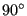
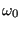

Next: *COMPLEX FREQUENCY Up: Input deck format Previous: *CLEARANCE Contents
Keyword type: step
This option allows concentrated forces to be applied to any node in the model which is not fixed by a single or multiple point constraint. Optional parameters are OP, AMPLITUDE, TIME DELAY, USER, LOAD CASE, SECTOR, SUBMODEL, STEP, DATA SET and OMEGA0. OP can take the value NEW or MOD. OP=MOD is default and implies that the concentrated loads applied to different nodes in previous steps are kept. Specifying a force in a node for which a force was defined in a previous step replaces this value. A force specified in a node and direction for which a force was already defined within the same step is added to this value. OP=NEW implies that all concentrated loads applied in previous steps are removed. If multiple *CLOAD cards are present in a step this parameter takes effect for the first *CLOAD card only.
The AMPLITUDE parameter allows for the specification of an amplitude by which the force values are scaled (mainly used for nonlinear static and dynamic calculations). Thus, in that case the values entered on the *CLOAD card are interpreted as reference values to be multiplied with the (time dependent) amplitude value to obtain the actual value. At the end of the step the reference value is replaced by the actual value at that time. In subsequent steps this value is kept constant unless it is explicitly redefined or the amplitude is defined using TIME=TOTAL TIME in which case the amplitude keeps its validity.
The AMPLITUDE parameter applies to all loads specified by the same *CLOAD card. This means that, by using several *CLOAD cards, different amplitudes can be applied to the forces in different coordinate directions in one and the same node. An important exception to this rule are nodes in which a transformation applies (by using the *TRANSFORM card): an amplitude defined for such a node applies to ALL coordinate directions. If several are defined, the last one applies.
The TIME DELAY parameter modifies the AMPLITUDE parameter. As such, TIME DELAY must be preceded by an AMPLITUDE name. TIME DELAY is a time shift by which the AMPLITUDE definition it refers to is moved in positive time direction. For instance, a TIME DELAY of 10 means that for time t the amplitude is taken which applies to time t-10. The TIME DELAY parameter must only appear once on one and the same keyword card.
If the USER parameter is selected the concentrated load values are determined by calling the user subroutine cload.f, which must be provided by the user. This applies to all nodes listed beneath the *CLOAD keyword. Any load values specified following the degree of freedom are not taken into account. If the USER parameter is selected, the AMPLITUDE parameter has no effect and should not be used.
The LOAD CASE parameter is only active in *STEADY STATE DYNAMICS calculations. LOAD CASE = 1 means that the loading is real or in-phase. LOAD CASE = 2 indicates that the load is imaginary or equivalently phase-shifted by . Default is LOAD CASE = 1.
The SECTOR parameter can only be used in *MODAL DYNAMIC and *STEADY STATE DYNAMICS calculations with cyclic symmetry. The datum sector (the sector which is modeled) is sector 1. The other sectors are numbered in increasing order in the rotational direction going from the slave surface to the master surface as specified by the *TIE card. Consequently, the SECTOR parameters allows to apply a point load to any node in any sector. However, the only coordinate systems allowed in a node in which a force is applied in a sector different from the datum sector are restricted to the global Carthesian system and a local cylindrical system. If the global coordinate system applies, the force defined by the user (in the global system) is simply copied to the appropriate sector without changing its direction. The user must make sure the direction of the force is the one needed in the destination sector. If a local cylindrical system applies, this system must be identical with the one defined underneath the *CYCLIC SYMMETRY MODEL card. In that case, the force defined in the datum sector is rotated towards the destination sector, i.e. the radial, circumferential and axial part of the force is kept.
The SUBMODEL parameter specifies that the forces in the specified degrees of freedom of the nodes listed underneath will be obtained by interpolation from a global model. To this end these nodes have to be part of a *SUBMODEL,TYPE=NODE card. On the latter card the result file (frd file) of the global model is defined. The use of the SUBMODEL parameter requires the STEP or the DATA SET parameter.
In case the global calculation was a *STATIC calculation the STEP parameter specifies the step in the global model which will be used for the interpolation. If results for more than one increment within the step are stored, the last increment is taken.
In case the global calculation was a *FREQUENCY calculation the DATA SET parameter specifies the mode in the global model which will be used for the interpolation. It is the number preceding the string MODAL in the .frd-file and it corresponds to the dataset number if viewing the .frd-file with CalculiX GraphiX. Notice that the global frequency calculation is not allowed to contain preloading nor cyclic symmetry.
Notice that the forces interpolated from the global model are not transformed, no matter what coordinate system is applied to the nodes in the submodel. Consequently, if the forces of the global model are stored in a local coordinate system, this local system also applies to the submodel nodes in which these forces are interpolated. So the submodel nodes in which the forces of the global model are interpolated, inherit the coordinate system in which the forces of the global model were stored. The SUBMODEL parameter and the AMPLITUDE parameter are mutually exclusive.
Notice that the interpolation of the forces from a global model onto a submodel is only correct if the global and submodel mesh coincide. Else, force equilibrium is violated. Therefore, the option to interpolate forces on submodels only makes sense if it is preceded by a submodel calculation (the same submodel) with displacement interpolation and force output request. Summarizing, in order to create a force-driven calculation of a submodel, knowing the displacement results in the global model one would proceed as follows:
Applications of this technique include force-driven fracture mechanics calculations.
Finally, the OMEGA0 parameter (notice that the last character is the number zero, not the letter O) specifies the value of  in a *GREEN step. It is a required parameter in a *GREEN step.
If more than one *CLOAD card occurs within the input deck the following rules apply:
If a *CLOAD card is applied to the same node AND in the same direction as in a previous application, then
First line:
Following line:
Example: *CLOAD,OP=NEW,AMPLITUDE=A1,TIME DELAY=20. 1000,3,10.3
removes all previous point load forces and applies a force with magnitude 10.3 and amplitude A1 (shifted in positive time direction by 20 time units) for degree of freedom three (global if no transformation was defined for node 1000, else local) of node 1000.
Example files: achtelp, beamdelay.